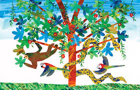

There is a great amount of significant marvellous illustrators of children's books and here you'll find a list of several magicians,
who make children and adults fall in love with the reflection of their imagination.
Nothing beats a good book - except, perhaps, one that is beautifully illustrated
Foreign Children Illustrators
Top-3 Foreign Children Illustrators
TOP-3 Foreign Children Illustrators
Alison Jay
Alison Jay has a way of depicting the wonders of childhood. Her illustrations might as well be windows into the world as a kid see it: bright colors brim, and an innocent sense of fun brings each piece to life before our eyes.
Top-3 the most admirable books of Alison Jay
Books
Illustrations
Listen, Listen
Looking For Yesterday
Out of the Blue
Eric Carle
Eric Carle
Eric Carle is primarily known for The Very Hungry Caterpillar and over 70 picture books done in his colorful collage technique.

Top-3 the most famous books of Eric Carle
Very hungry caterpillar
The Mixed-Up Chameleon
Dream Snow
Axel Scheffler
Axel Scheffler is best known for his cartoon-like pictures for children's books,
in particular The Gruffalo
and The Gruffalo's Child,
written by Julia Donaldson.
Top-3 the most famous books of Axel Scheffler
The Gruffalo
- the award-winning story about a clever little mouse outwitting the creatures of the deep dark wood
The Snail and the Whale
- is a story about a tiny snail who goes on an amazing journey by hitching a ride on the tail of a huge humpback whale.
Zog
- is a picture book about a young accident-prone dragon, named Zog, who wants to be the best student in dragon school.
"The Gruffalo" was so popular that there was created a self-titled cartoon.